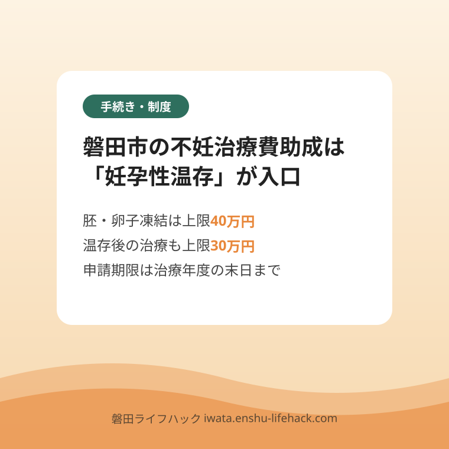

手続き・制度
磐田市の不妊治療費助成は「妊孕性温存」から｜胚・卵子凍結は上限40万円、温存後の治療も上限30万円、申請は治療年度の末日まで

この記事の要点
Q. 磐田市に不妊治療の助成はありますか。あるとすれば、誰が、いくらまで受けられますか？
A. 一般の不妊治療への一律助成ではなく、がん治療等に向けた「妊孕性温存」が入口です。凍結保存時に43歳未満で指定医療機関で治療を受けた方が対象で、胚・卵子・卵巣組織の凍結は上限40万円、凍結したものを使う温存後生殖補助医療は上限10万円から30万円。申請は治療年度の末日まで、窓口はiプラザ3階の健康増進課（電話0538-37-2011）です。
導入——「不妊治療の助成」を探すと行き着く制度
「磐田市に不妊治療の助成はありますか」。この問いに市のホームページで答えを探すと、たどり着くのは一般の不妊治療そのものへの補助ではありません。
行き着くのは、「磐田市若年がん患者等妊孕性温存治療費等助成事業」という制度です。名前は長いのですが、中身は二段構えになっています。
第一段は、がん治療などで将来妊娠しにくくなるおそれがある方が、治療の前に精子・卵子・胚（受精卵）・卵巣組織を凍結保存する「妊孕性温存治療」への助成です。
第二段は、凍結しておいたものを実際に使って妊娠を目指す「温存後生殖補助医療」への助成です。
つまり磐田市の不妊治療費助成は、「将来子どもを生み育てることを望む患者さんへ」という市の案内の言葉どおり、がん治療と向き合う方の将来の選択肢を残すための制度として設計されています。
この記事では、市の公式案内（2025年9月版）を実際に開いて、対象者・上限額・回数・期限・窓口を一つずつ確認しました。
まず結論｜助成は「温存治療」と「温存後の治療」の2本立て
市の案内は2種類あります。ページ番号1007568の案内が妊孕性温存治療分、ページ番号1012157の案内が温存後生殖補助医療分です。
どちらも対象になるのは「保険適用対象外の費用」で、入院費や入院中の食事代など治療に関係ない費用は対象外です。
温存治療のほうは、途中で体調不良などにより治療を中止した場合でも、それまでに要した費用は対象になります。
一方、2回目以降の凍結保存の維持にかかる費用は対象外です。
ここを取り違えると「凍結した後の保管料も出るはず」と誤解してしまうので、最初に押さえておきたい線引きです。
温存治療の対象者｜43歳未満・市内在住・指定医療機関が条件
温存治療の対象は、次のすべてを満たす方です。申請時に磐田市に住所があること。
妊孕性温存治療が生命に与える影響を考え、生殖医療医と原疾患主治医が許容されると認めた方であること。
凍結保存時の年齢が43歳未満であること（胚凍結の場合は、凍結保存時に43歳未満であり、治療開始時点で法律婚または事実婚の関係にある方）。
申請する治療について他自治体から同様の助成を受けていないこと。他自治体の助成を2回以上受けていないこと。指定医療機関で治療を受けたこと。
医療機関の詳細は市への問い合わせが必要です。
年齢の判定が「凍結保存時」である点は重要です。がん治療の開始が迫る中で手続きを進める制度ですから、治療計画が決まったら、まず年齢と年度の2つの時計を意識して動く必要があります。
温存治療の上限額｜胚・未受精卵子・卵巣組織は40万円
上限額は治療方法ごとに決まっています。精子の採取凍結保存は2万5千円、精巣内精子採取術による精子凍結保存は35万円です。
胚（受精卵）凍結保存は40万円、未受精卵子凍結保存は40万円、卵巣組織凍結保存（組織の再移植を含む）は40万円です。

ただし胚と未受精卵子には注意書きがあり、静岡県の事業「静岡県小児・AYA世代のがん患者等の妊孕性温存支援事業」を併用する場合は、市の上限が胚5万円・未受精卵子20万円に変わります。
これは二重取りの防止ではなく、県と市で負担を分け合う設計です。県事業に当てはまる場合は併用が可能なので、「県で申請したから市は終わり」と決めつけず、両方の案内を確認する価値があります。
助成回数は1人につき通算2回までで、県事業の申請も含めて数えます（県と市を併用した場合は1回と換算）。
温存後の不妊治療への助成｜凍結したものを「使うとき」も対象
この制度が手厚いのは、凍結で終わらず、その先の治療まで助成が続く点です。
温存後生殖補助医療の対象は、申請時に市内に住所があり、治療初日における女性の年齢が43歳未満で、夫婦または事実婚のいずれかが妊孕性温存治療を受けている方です。
さらに、温存後生殖補助医療以外の治療法では妊娠の見込みがないか極めて少ないと医師に診断されたことも条件です。
生殖補助医療が生命に与える影響を考えて生殖医療医と原疾患主治医が許容されると認めたこと、他自治体から同様の助成を受けていないこと、指定医療機関で治療を受けたことも条件です。
上限額は、凍結した胚を用いた生殖補助医療が10万円、凍結した未受精卵子を用いたものが25万円、凍結した卵巣組織の再移植後のものと凍結した精子を用いたものが30万円です。
細かい規定として、以前に凍結した胚を解凍して胚移植を実施する場合は10万円、人工授精を実施する場合は1万円、採卵したものの卵が得られなかった・状態の良い卵が得られず中止した場合は10万円が上限になります。
逆に、卵胞が発育しない・排卵終了のため中止した場合や、卵胞準備中・体調不良等により中止した場合は対象外です。
「中止でも出る場合と出ない場合がある」という点は、治療の現場では見落としやすいので、事前に医療機関と市の両方に確認しておくべきポイントです。
温存後の助成回数｜40歳未満は通算6回、40歳以上は通算3回
温存後生殖補助医療の助成回数は、初回の助成を受けた際の治療期間初日の女性の年齢で決まります。40歳未満なら通算6回、40歳以上なら通算3回です。

助成を受けた後に、出産した場合や妊娠12週以降に死産に至った場合は、助成回数がリセットされます。他自治体の同様の助成を受けた回数も通算に含まれます。
年齢で回数が変わる仕組みは、保険適用の不妊治療の回数制限と考え方が似ています。
初回の治療をいつ始めるかが、その後の回数の枠を決めるため、主治医との治療計画と合わせて、申請のタイミングを早めに相談しておくことが大切です。
申請期限と書類｜どちらも「治療年度の末日まで」が原則
申請期限は温存治療・温存後治療のどちらも同じで、治療（費用の支払いまでを含む）を行った年度の末日までに、必要書類を市健康増進課へ提出します。郵送も可能です。
やむを得ない事情で当該年度に申請が難しい場合は、翌年度に申請できる救済もありますが、原則は年度末です。
3月に治療が終わるケースでは、書類の準備期間がほとんど残らないため、治療と並行して書類を揃える意識が必要です。
温存治療の主な書類は、助成金交付申請書（様式第1号）、妊孕性温存治療実施証明書（様式第2号）、原疾患治療実施医療機関の証明書（様式第3号）、性腺毒性のリスク分類表（様式第3号の2）、領収金額内訳証明書（様式第4号）です。
胚凍結の場合は両人の戸籍謄本、事実婚の場合は申立書（様式第5号）と両人の住民票も必要です。申請者は治療を受けた本人とし、18歳未満の場合は申請者欄に保護者の名前を記入します。
ゆうちょ銀行への振込を希望する場合は通帳のコピーも添えます。証明書の発行費用は自己負担です。
温存後治療の書類は、交付申請書（様式第6号）、温存後生殖補助医療実施証明書（様式第7号）、領収金額内訳証明書（様式第8号）、原疾患側の証明書（様式第3号、温存治療分で提出済みなら不要）、両人の戸籍謄本、事実婚の場合は申立書（様式第9号）と両人の住民票です。
窓口はiプラザ3階の健康増進課｜電話は0538-37-2011
問い合わせと書類の提出先は、磐田市健康増進課健康支援グループです。場所はiプラザ3階、住所は〒438-0077 磐田市国府台57番地7、電話は0538-37-2011です。
指定医療機関の詳細は案内に一覧がなく「お問合せください」とされているため、治療を受ける医療機関が指定に含まれるかどうかは、治療を始める前に必ず確認してください。
市のホームページでは、温存治療分がページ番号1007568、温存後治療分がページ番号1012157で検索できます。様式は窓口で受け取るか、ホームページからダウンロードできます。
良い点
良い点は3つあります。第一に、凍結保存だけでなく「使うとき」の治療まで助成が続く二段構えで、将来の選択肢を残すところから実際に子どもを迎える治療までを一つの制度で支えている点です。
第二に、中止した場合でも対象になるケースが明記され、県事業との併用ルールや回数のリセット条件まで案内に書かれている点です。読み手が自分の状況を当てはめやすい案内になっています。
第三に、郵送での申請が可能で、やむを得ない事情がある場合の翌年度申請も認められている点です。治療と並行して手続きをする方への配慮が感じられます。
注文したい点
注文したい点もあります。まず、制度の名前と中身が結びつきにくいことです。
「不妊治療費助成」で検索しても、この制度には直接たどり着きにくく、一般の不妊治療への助成を探している方と、本当にこの制度を必要としている方の双方に、情報の届きにくさがあります。
次に、指定医療機関の詳細が案内に載っておらず、問い合わせが必須になっている点です。治療開始前に確認が要る項目こそ、せめて医療機関名の目安は公開してほしいところです。
また、上限額の表は県事業併用時の金額が括弧書きで併記されており、初めて読む方には「自分はいくらもらえるのか」が一目で分かりにくい構成です。
対案・結論
対案として提案したいのは、市の子育て・健康の案内ページに「不妊治療・妊孕性温存の助成」という入口を用意し、この制度へのリンクと対象の要約を置くことです。
あわせて、県事業との併用時に受け取れる合計額の目安を、治療方法ごとに一例として示せば、読み手の見通しはぐっと立てやすくなります。
結論として、磐田市には一般の不妊治療への一律の助成はありませんが、がん治療等を前にした妊孕性温存と、その後の生殖補助医療については、全国的に見ても手厚い部類の助成があります。
該当する可能性がある方は、治療を始める前に健康増進課へ相談し、年齢・年度・回数の3つの条件を先に確認することをおすすめします。
確認する順番
- 治療計画が決まったら、凍結保存時の年齢（43歳未満）と治療年度の末日という2つの期限を先に確認する
- 治療を受ける医療機関が市の指定医療機関に含まれるかを、健康増進課（0538-37-2011）へ治療前に問い合わせる
- 県事業（静岡県小児・AYA世代のがん患者等の妊孕性温存支援事業）に当てはまるかを確認し、併用時の上限額を把握する
- 様式第1号などの申請書類と証明書を治療と並行して揃え、年度末までに窓口・郵送で提出する
一般の不妊治療の保険適用との関係｜誤解しやすい点を整理する
もう一つ、誤解しやすい点を整理しておきます。2022年4月からは、人工授精や体外受精・顕微授精などの不妊治療が公的医療保険の適用対象になっています。
そのため「不妊治療は保険で受けられるようになったのだから、市の助成はもう無いのではないか」と考える方もいるかもしれません。
しかし、この妊孕性温存の助成が対象とするのは、保険適用の対象外にかかる費用です。妊孕性温存治療そのものは保険の枠組みの外にあり、凍結保存という特殊な治療の費用は、保険適用の不妊治療とは別の問題として残り続けています。
つまり、保険適用が広がった今も、この市の助成の役割は消えていません。むしろ、温存した胚や卵子を使って将来治療を受ける段階では、保険適用になる部分と、助成の対象になる部分が混在します。
自分が受ける治療のどの部分が保険で、どの部分が助成の対象になるのかは、治療の設計が決まった段階で、医療機関と市の窓口の双方に確認しておくのが確実です。
また、助成を受けた金額は医療費控除の計算にも関係してきます。確定申告で医療費控除を受ける場合、助成金はその対象となった医療費から差し引く扱いになるため、領収書と助成の決定通知は治療後も大切に保管してください。
細部は税務の案内で確認が必要ですが、「助成を受けたら終わり」ではなく、書類を一式そろえて残しておくことが、後からの手続きを楽にします。
大石の視点
この制度を調べていて強く感じたのは、「子どもを持つかどうか」を決める前に、決められる状態を残しておくことの大切さです。
がん治療は待ってくれません。その最中に、将来の妊娠の可能性まで考えて動ける方は多くないはずです。
だからこそ、制度の存在を知っているかどうかが、そのまま選択肢の有無になります。市の案内は丁寧に作られていますが、必要な方に届いて初めて意味を持ちます。
治療の渦中にある方と、その周りにいる方が、この記事をきっかけに一度だけでも市の窓口に電話してみる。0538-37-2011、その一本が将来の選択肢を残すことにつながります。
まとめ
磐田市の不妊治療費助成は、がん治療等に向けた妊孕性温存と、その後の生殖補助医療を支える二段構えの制度です。温存治療は凍結方法ごとに上限40万円まで、温存後の治療は上限10万円から30万円で、申請はどちも治療年度の末日までです。
- 対象は凍結保存時に43歳未満・申請時に市内在住・指定医療機関で治療を受けた方
- 温存治療の上限は胚・未受精卵子・卵巣組織が40万円（県事業併用時は胚5万円・未受精卵子20万円）、回数は通算2回まで
- 温存後生殖補助医療は上限10万円〜30万円、回数は初回時40歳未満で通算6回・40歳以上で通算3回
- 申請期限は治療年度の末日まで。窓口はiプラザ3階の健康増進課（0538-37-2011）
参考にした公式情報
- 磐田市若年がん患者等妊孕性温存治療費等助成事業の案内（妊孕性温存治療分）／磐田市健康増進課（対象・上限額・回数・書類・期限を2026年11月21日確認。2025年9月版、市のホームページ検索ページ番号1007568）
- 同事業の案内（温存後生殖補助医療分）／磐田市健康増進課（対象・上限額・回数・中止時の扱いを2026年11月21日確認。2025年9月版、市のホームページ検索ページ番号1012157）
最終確認日：2026-11-21 ／ 本記事は公表情報と執筆者の見解を分けて記載しています。制度・数値・公開状況は変更される場合があるため、最新情報は磐田市公式ページでご確認ください。